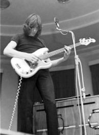

Οι Pink Floyd είναι βρετανικό μουσικό συγκρότημα που έχει γράψει ιστορία στον χώρο της ροκ μουσικής.
Έχουν ξεχωρίσει τόσο για τις πρωτοποριακές για την εποχή συνθέσεις τους, όσο και για τους ποιητικούς,
μεταφορικούς και συγκινησιακά φορτισμένους στίχους τους, τα ευφάνταστα εξώφυλλα τους, τις πειραματικές
ενορχηστρώσεις και ηχογραφήσεις και τις θεαματικές συναυλίες τους. Υπολογίζεται ότι το συγκρότημα έχει πουλήσει
γύρω στα 74,5 εκ άλμπουμ στις Η.Π.Α. και πάνω από 300 εκατομμύρια άλμπουμ παγκοσμίως και συγκαταλέγεται έτσι στα
πιο επιτυχημένα, εμπορικά, ροκ συγκροτήματα όλων των εποχών.
Μέχρι το τέλος της δεκαετίας του '60, οι Pink Floyd έχαιραν μίας σχετικής επιτυχίας,
ως ψυχεδελική μπάντα με ηγέτη τον Σιντ Μπάρετ (Syd Barrett). Η ασταθής συμπεριφορά του Μπάρετ —οφειλόμενη
σε αλόγιστη χρήση παραισθησιογόνων ουσιών— ανάγκασε τους υπόλοιπους να τον αντικαταστήσουν με τον κιθαρίστα Ντέιβιντ Γκίλμορ (David Gilmour).
Το 1973, το συγκρότημα γνώρισε παγκόσμια επιτυχία με τον δίσκο "The Dark Side of the Moon" και συνέχισε να απολαμβάνει της αποδοχής
του κοινού μέχρι και τη μεγαλύτερη εμπορική τους επιτυχία "The Wall". Επίσης, μεγάλη ανταπόκριση στο κοινό είχαν και τα άλμπουμ
"Wish You Were Here" (1975), το οποίο ήταν αφιερωμένο στον ιδρυτή του συγκροτήματος Σιντ Μπάρετ, αλλά και το "Animals" (1977).
Το 1985, (λίγο μετά τον δίσκο "The Final Cut") ο μπασίστας και τραγουδιστής του γκρουπ Ρότζερ Γουότερς (Roger Waters) αποχώρησε
από το συγκρότημα και κυνήγησε δικαστικά τους υπόλοιπους, όταν αυτοί συνέχισαν τους δίσκους και τις συναυλίες, διατηρώντας το όνομα
Pink Floyd. Τελικά επήλθε εξωδικαστικός συμβιβασμός, ο οποίος τους επέτρεψε τη χρήση του ονόματος και των περισσοτέρων τραγουδιών.
Το 1987, οι Pink Floyd χωρίς τον Γουώτερς πλέον, δηλαδή οι Γκίλμορ, Μέισον και Ράιτ, επιστρέφουν, δισκογραφικά, με τον δίσκο "A Momentary
Lapse Of Reason" και αρχίζουν περιοδείες παγκοσμίως που είχαν πραγματικά σημαντική αποδοχή από τον κοινό τους. Το δισκογραφικά κύκνειο
άσμα του συγκροτήματος έρχεται το 1994 με το "The Division Bell", δίσκο που γνώρισε τεράστια εμπορική επιτυχία και τραγουδήθηκε μεταξύ άλλων
στη μετέπειτα σειρά περιοδειών, η οποία είχε ως αποτέλεσμα και τη μαγνητοσκόπηση ενός μουσικού DVD, με τίτλο "P.U.L.S.E." από τις συναυλίες
που έδωσε το συγκρότημα στο "Earls Court" του Λονδίνου, το 1994.
Έντεκα χρόνια μετά, το συγκρότημα επανενώθηκε (δηλαδή επέστρεψε προσωρινά ο Γουώτερς) στη μεγαλύτερη σε όγκο συναυλία των Pink Floyd,
η οποία έγινε στο Λονδίνο, στις 2 Ιουλίου 2005 ("London Live 8 concert"). Σε συνέντευξη του, στις 2 Φεβρουαρίου του 2006, στην ιταλική
εφημερίδα "La Repubblica", ο Γκίλμορ δήλωσε ότι το γκρουπ δεν θα κυκλοφορήσει νέο υλικό παρόλο που ορισμένα από τα μέλη του σκοπεύουν
να ακολουθήσουν σόλο πορεία ή ακόμα και να συνεργαστούν μεταξύ τους σε επόμενες δουλειές τους.
Από τότε ο Ρότζερ Γουώτερς (συνήθως μαζί με τον Νικ Μέισον) και ο Ντέιβιντ Γκίλμορ (με τον Ρίτσαρντ Ράιτ) περιοδεύουν ξεχωριστά
, παίζοντας τραγούδια από την προσωπική τους δισκογραφία, αλλά κυρίως, επανεκτελώντας τα ιστορικά τραγούδια, που δημιούργησαν ως συγκρότημα.
Η πιθανότητα άλλης επανένωσης δεν είχε αποκλειστεί ούτε από τον Μέισον ούτε τον Γκίλμορ, ωστόσο κάτι τέτοιο κατέστη αμφίβολο με τον θάνατο
του Ράιτ από καρκίνο στις 15 Σεπτεμβρίου 2008. Το 2014 ανακοινώθηκε η κυκλοφορία ενός ακόμη δίσκου με τίτλο "The Endless River" με ηχογραφήσεις
του Ράιτ από το 1993.
Οι Pink Floyd σχηματίστηκαν το 1965 από τον μπασίστα Ρότζερ Γουώτερς, τον κιμπορντίστα Ρίτσαρντ Ράιτ και το ντράμερ Νικ Μέισον. Αρχική ονομασία του
συγκροτήματος ήταν The Screaming Abdabs, με τη συμμετοχή του μπασίστα Κλάιβ Μέτκαλφ και των τραγουδιστών Τζουλιέτ Γκέιλ και Κιθ Νομπλ. Στο σχήμα
προστέθηκε ο Σιντ Μπάρετ και μετονομάστηκαν σε Pink Floyd, παίρνοντας το όνομα τους από ένα αμάλγαμα του Floyd District Council και του μπλουζ μουσικού
Pink Anderson.
Η μουσική τους εστίαζε σε R&B κομμάτια πριν ενταχθούν στο κίνημα της βρετανικής ψυχεδελικής σκηνής. Το πρώτο τους σινγκλ ήταν το τραγούδι "Arnold Layne",
το οποίο ηχογραφήθηκε πριν το συγκρότημα υπογράψει στην "ΕΜΙ". Σκαρφάλωσε στο # 20 στη Μεγάλη Βρετανία, ακολουθούμενο από το "See Emily Play", που
έφθασε στο # 6. Οι Pink Floyd κυκλοφόρησαν τον δίσκο "The Piper At The Gates Of Dawn", με τον συνθετικό ρόλο να έχει αναλάβει ο Μπάρετ και το ηχητικό
σύνολο να παρουσιάζει μία περίεργη μορφή πειραματισμού.
Η συμπεριφορά του Μπάρετ σύντομα έγινε ιδιαίτερα ασταθής κατά τις ζωντανές τους εμφανίσεις, υποβαθμίζοντας τη δημοτικότητα και την εικόνα του συγκροτήματος.
Η έντονη χρήση ναρκωτικών επιβάρυνε τον μελαγχολικό χαρακτήρα του και ο κιθαρίστας Ντέιβιντ Γκίλμορ προστέθηκε στο συγκρότημα, για να παραμείνουν προσωρινά
ως πενταμελές σχήμα. Τον Μάρτιο του 1968, ο Μπάρετ αποχώρησε από τους Pink Floyd, παίρνοντας το μάνατζμεντ του συγκροτήματος μαζί του. Κυκλοφόρησε δύο δίσκους
πριν αποχωρήσει οριστικά από τη μουσική βιομηχανία.
Το συγκρότημα ηχογράφησε το άλμπουμ "A Saucerful Of Secrets" με τον Γουώτερς ως βασικό συνθέτη, ακολουθούμενο από το σαουντρακ της ταινίας "More" του Μπάρμπετ
Σρέντερ. Και οι δύο κυκλοφορίες σκαρφάλωσαν στο Top-10 των τσαρτ της πατρίδας τους και της Γαλλίας.
Στα τέλη του 1969, οι Pink Floyd επέστρεψαν με το διπλό άλμπουμ "Ummagumma", το οποίο περιείχε προσωπικές ηχογραφήσεις του κάθε μουσικού αλλά και ζωντανές ηχογραφήσεις.
Ακολούθησε το σάουντρακ της ταινίας "Zabriskie Point", αλλά ο δίσκος "Atom Heart Mother" ήταν αυτός που έθεσε τις βάσεις για την εκτίναξη της δημοτικότητας
του συγκροτήματος σε επίπεδο αστέρων. Το ομώνυμο κομμάτι καταλάμβανε ολόκληρη την πρώτη πλευρά του δίσκου και συμμετείχε σε αυτό μία 40μελής ορχήστρα.
Το άλμπουμ σκαρφάλωσε στην κορυφή των τσαρτ στη Μεγάλη Βρετανία και το Top-10 στην Ολλανδία και τη Γερμανία.
Οι Pink Floyd περιόδευσαν, εκτενώς, για την προώθηση του "Atom Heart Mother", ενώ η "ΕΜΙ" εξέδωσε τη συλλογή "Relics" με το προηγουμένως ακυκλοφόρητο τραγούδι
"Biding My Time".

Ο δίσκος "Meddle" κυκλοφόρησε στα τέλη του 1971 με την progressive πλευρά των Pink Floyd να καταλαμβάνει πλέον το κύριο μέρος της μουσικής τους.
Χαρακτηριστικό παράδειγμα αποτέλεσε το εικοσάλεπτο "Echoes". Το συγκρότημα συνέχισε με το σάουντρακ άλλης μίας ταινίας του Σρέντερ, με τίτλο "Obscured
By Clouds".
Η επόμενη κυκλοφορία των Pink Floyd αποτέλεσε το σήμα κατατεθέν τους. Ο δίσκος "The Dark Side Of The Moon" γνώρισε τεράστια επιτυχία σε όλο τον κόσμο,
παραμένοντας στα αμερικάνικα τσαρτ για περισσότερες από 700 εβδομάδες και όντας το πρώτο # 1 τους στην αντίπερα όχθη του Ατλαντικού. Οι πωλήσεις
του έχουν πλέον αγγίξει τα πενήντα εκατομμύρια αντίτυπα παγκοσμίως και έχει βραβευθεί ως 15 φορές πλατινένιος στις Ηνωμένες Πολιτείες και εννέα φορές
πλατινένιος στην πατρίδα του συγκροτήματος. Οι ηχογραφήσεις περιείχαν κομμάτια ομιλίας του μάνατζερ των "Abbey Road Studios", Τζέρι Ντρίσκολ.
Δύο χρόνια αργότερα, τον Σεπτέμβριο του 1975, κυκλοφόρησαν το επόμενο τους άλμπουμ με τίτλο "Wish You Were Here", το οποίο ανέβηκε στο # 1 σε Μεγάλη Βρετανία,
Ηνωμένες Πολιτείες, Γαλλία, Αυστραλία, Νέα Ζηλανδία και Ολλανδία. Το γνωστότερο τραγούδι του δίσκου είναι το "Shine On You Crazy Diamond" και ήταν αφιερωμένο
στον Σιντ Μπάρετ. Σε μία περίεργη σύμπτωση, ο Μπάρετ επισκέφθηκε το συγκρότημα στο στούντιο των ηχογραφήσεων, όντας πολύ αλλαγμένος στην όψη σε βαθμό που οι
πρώην συνάδελφοι του δεν τον γνώρισαν.
Ο Γκίλμορ έκανε ένα διάλειμμα από τους Pink Floyd το 1974 για να βοηθήσει τον φίλο του Ρόι Χάρπερ, παίζοντας στο "Hyde Park festival" μαζί με τον Τζον Πωλ
Τζόουνς των Led Zeppelin και τον Στιβ Μπράουτον. Ο Χάρπερ έκανε εμφάνιση με τους Pink Floyd στο "Knebworth Festival" κατά την εκτέλεση του
τραγουδιού "Have a Cigar".
Τον Ιανουάριο του 1977, κυκλοφόρησαν τον δίσκο "Animals", κατά την περιοδεία του οποίου προσέθεσαν στη σύνθεση τους τούς κιθαρίστες Αλ Στιούαρτ και
Σνόουι Γουάιτ. Προβλήματα εμφανίστηκαν στην τελευταία εμφάνιση της συγκεκριμένης περιοδείας, όταν ο Γουώτερς έφτυσε στο πρόσωπο έναν θεατή.
Την ίδια χρονιά, ο Μέισον έκανε την παραγωγή του δίσκου "Music For Pleasure" των The Damned, συνεργασία η οποία κατακρίθηκε από τα ΜΜΕ και τους οπαδούς
του πανκ συγκροτήματος, λόγω της ανομοιότητας των Pink Floyd με το ανερχόμενο κίνημα της πανκ.
Σε μία περίοδο ανομβρίας για τους Pink Floyd, ο Γκίλμορ κυκλοφόρησε τον ομώνυμο προσωπικό του δίσκο με τον μπασίστα Ρικ Γουίλς και το ντράμερ Γουίλι Γουίλσον,
οι οποίοι εντάχθηκαν στους μουσικούς με τους οποίους περιόδευαν οι Pink Floyd.
Ο δίσκος "The Wall" έδωσε στο συγκρότημα άλλη μία μεγάλη επιτυχία, σκαρφαλώνοντας στην κορυφή των περισσότερων τσαρτ του πλανήτη και πουλώντας πάνω από
τριάντα εκατομμύρια αντίτυπα παγκοσμίως. Το συγκεκριμένο άλμπουμ αποτέλεσε το ζενίθ της δημιουργικότητας του Γουώτερς και μία ταινία με κινούμενα
σχέδια από τον Τζέραλντ Σκαρφ δημιουργήθηκε, βοηθώντας τις πωλήσεις του δίσκου, ενώ το συγκρότημα είχε το μοναδικό # 1 σινγκλ του με το πλατινένιο
"Another Brick in the Wall(Part II)".
Κατά το δεύτερο μισό του 1982, οι Pink Floyd συνέθεσαν και ηχογράφησαν τον δίσκο "The Final Cut", ο οποίος ολοκληρώθηκε χωρίς τη συμμετοχή του Ρίτσαρντ
Ράιτ, αφού είχε απολυθεί από τον Γουώτερς κατά τις ηχογραφήσεις του προηγούμενου τους δίσκου. Τη θέση του κιμπορντίστα κάλυψαν ο Άντι Μπόουν και ο Μάικλ
Κέιμεν. Η αρχηγία του Γουώτερς είχε φτάσει σε τέτοιο επίπεδο, που η κυκλοφορία προωθήθηκε με τη φράση "The Final Cut: A Requiem for the Post-War Dream
- by Roger Waters, performed by Pink Floyd" (The Final Cut: Ένα ρέκβιεμ για το μεταπολεμικό όνειρο - από τον Ρότζερ Γουώτερς, εκτελεσμένο από τους Pink Floyd)
.
Το άλμπουμ κυκλοφόρησε τον Μάρτιο του 1983, σκαρφαλώνοντας στην κορυφή των βρετανικών τσαρτ και όντας συνέχεια του "The Wall", αποτέλεσε αντανάκλαση της
σχέσης του Γουώτερς με τον πατέρα του. Η ψυχρότητα της μουσικής απέτρεψε το "The Final Cut" από το να πλησιάσει το επίπεδο των πωλήσεων του προκατόχου
του. Το συγκρότημα διαλύθηκε ανεπίσημα μετά από αυτή την κυκλοφορία.
Το 1984, ο Γουώτερς κυκλοφόρησε τον πρώτο του προσωπικό δίσκο με τίτλο "The Pros And Cons Of Hitch-hiking" και περιόδευσε με τον Ντέιβιντ Γκίλμορ,
τον Νικ Μέισον και τον κιθαρίστα Έρικ Κλάπτον. Οι Μέισον και Γκίλμορ κυκλοφόρησαν το σινγκλ "Lie For A Lie" το 1985, σε συνεργασία με τον κιθαρίστα
Ρικ Φεν. Τον Δεκέμβριο του ίδιου έτους, ο Γουώτερς ανακοίνωσε την αποχώρηση του από τους Pink Floyd. Καθ' όλη την επόμενη χρονιά, ο Γουώτερς και
ο Γκίλμορ με τον Μέισον αναλώθηκαν σε δικαστική διαμάχη για τη χρήση του ονόματος των Pink Floyd, μία αναμέτρηση την οποία κέρδισαν οι Γκίλμορ
και Μέισον.
Ο Γκίλμορ ανασχημάτισε τους Pink Floyd για το "A Momentary Lapse Of Reason", το οποίο κυκλοφόρησε τον Σεπτέμβριο του 1987, ανεβαίνοντας στο # 3 στην Μεγάλη
Βρετανία και τις Ηνωμένες Πολιτείες και παραμένοντας στις λίστες του Billboard για περισσότερο από ένα χρόνο. Ο ίδιος αργότερα, παραδέχθηκε ότι αρχικός
σκοπός του άλμπουμ ήταν να αποτελέσει προσωπική κυκλοφορία του. Στην παραγωγή συμμετείχε και ο Μπομπ Έζριν και επέστρεψε στο συγκρότημα ο κιμπορντίστας Ρικ
Ράιτ. Ο ντράμερ των Vanilla Fudge, Κάρμαιν Άπις συμμετείχε στο τραγούδι "Dogs of War", όπως και ο Τζιμ Κέλντερ σε δύο άλλα κομμάτια του δίσκου.
Η περιοδεία για τον δίσκο ήταν αρχικά σχεδιασμένη να διαρκέσει μόλις έντεκα εβδομάδες, ξεκινώντας και τελειώνοντας στο Στάδιο Γουέμπλεϊ, περνώντας ενδιάμεσα
από τις Ηνωμένες Πολιτείες. Παρόλα αυτά, το συγκρότημα συνέχισε στις αρχές του 1988 στη Νέα Ζηλανδία και την Αυστραλία, ολοκληρώνοντας την περιοδεία μετά
από τρία χρόνια εμφανίσεων, στο Στίβενεϊτζ της Αγγλίας στις 30 Ιουλίου 1990. Κατά τη διάρκεια της περιοδείας, ηχογραφήθηκε ζωντανά και κυκλοφόρησε
το άλμπουμ "Delicate Sound Of Thunder".
Τον Ιανουάριο του 1993, ο Γκίλμορ, ο Μέισον, ο Ράιτ και ο μπασίστας Γκάι Πρατ μπήκαν στα "Brittania Row Studios" για να ηχογραφήσουν το επόμενο τους άλμπουμ.
Τον Μάρτιο του 1994, κυκλοφόρησε το "The Division Bell", σκαρφαλώνοντας στην κορυφή των τσαρτ, παγκοσμίως. Ο δίσκος περιείχε το πρώτο κομμάτι κατά το
οποίο τα κύρια φωνητικά ανέλαβε ο Ρικ Ράιτ μετά το "Wish You Were Here" του 1975. Το συγκρότημα κέρδισε το πρώτο του βραβείο Γκράμι με το τραγούδι "Marooned"
στην κατηγορία της καλύτερης ροκ ορχηστρικής εκτέλεσης.
Κατά την περιοδεία για την προώθηση του άλμπουμ, οι Pink Floyd έπαιζαν ολόκληρο το "The Dark Side Of The Moon", κάτι που αποτυπώθηκε στο ζωντανά ηχογραφημένο
άλμπουμ "P*U*L*S*E". Τη σύνθεση του σχήματος κατά τις ζωντανές τους εμφανίσεις συμπλήρωναν ο κιθαρίστας Τιμ Ρένγουικ και ο κιμπορντίστας Τζον Κάριν. Στις
29 Οκτωβρίου 1994, το συγκρότημα έδωσε την τελευταία του συναυλία στο "Earls Court" του Λονδίνου.
Οι Pink Floyd βρέθηκαν και πάλι στο προσκήνιο στις αρχές του 2004, όταν οι The Scissor Sisters ηχογράφησαν μία διασκευή στο "Comfortably Numb", ενώ
ο Γκίλμορ δώρισε 3,6 εκατομμύρια λίρες στην φιλανθρωπική οργάνωση "Crisis".
Το 2005, οι Μέισον, Γκίλμορ και Ράιτ ένωσαν τις δυνάμεις τους και πάλι με τον Ρότζερ Γουώτερς για μία φιλανθρωπική συναυλία στο Λονδίνο.
Κατά την 25η επέτειο της κυκλοφορίας του "The Wall", η "Cleopatra Records" παρουσίασε μία ζωντανή εκτέλεση του δίσκου με τίτλο "Back Against The Wall".
Σε αυτή, συμμετείχαν οι Στιβ Χάουι και Ρικ Γουέικμαν των Yes, οι Μάικ Πορκάρο και Στιβ Λούκατερ των Toto, ο Ντουίζιλ Ζάπα, ο Ίαν Άντερσον των Jethro
Tull, ο Στηβ Μορς των Deep Purple, ο Γκλεν Χιουζ, κ.α..
Στις 15 Σεπτεμβρίου 2008, ανακοινώθηκε ο θάνατος του Ρικ Ράιτ μετά από καρκίνο, ενώ δύο χρόνια νωρίτερα, στις 7 Ιουλίου 2006 είχε πεθάνει ο Σιντ Μπάρετ
λόγω καρκίνου στο πάγκρεας, παράλληλα με τα χρόνια προβλήματα διαβήτη που αντιμετώπιζε.
Στις 12 Μαΐου 2011, ο Ντέιβιντ Γκίλμορ εμφανίστηκε στη σκηνή με τον Ρότζερ Γουώτερς παίζοντας το "Comfortably Numb" στο "O2" του Λονδίνου κατά την περιοδεία
"The Wall Live". Τον Σεπτέμβριο του ίδιου έτους, η "ΕΜΙ" κυκλοφόρησε σε επανέκδοση όλη τη δισκογραφία του συγκροτήματος, σε μία καμπάνια με τίτλο "Why
Pink Floyd...?".
Τον Ιούλιο του 2014, ανακοινώθηκε ότι ένας νέος δίσκος με τίτλο "The Endless River" θα κυκλοφορούσε στις 7 Νοεμβρίου, με ηχογραφήσεις του Ρίτσαρντ Ράιτ πριν
τον θάνατο του και τη συμμετοχή των Γκίλμορ και Μέισον, αλλά όχι του Γουώτερς. Ο δίσκος ανέβηκε στην κορυφή των τσαρτ σε περισσότερες από είκοσι χώρες,
με τον Γκίλμορ να δηλώνει ότι αυτός είναι ο τελευταίος δίσκος στην καριέρα του συγκροτήματος, ανακοινώνοντας την διάλυση των Pink Floyd τον Αύγουστο
του 2015.